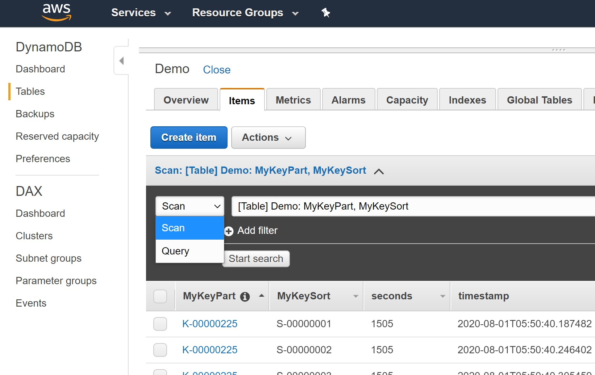

This was first published on https://www.dbi-services.com/blog/a-lesson-from-nosql-vs-rdbms-listen-to-your-users/ (2020-08-01)
Republishing here for new followers. The content is related to the versions available at the publication date.
.
I have written a few blog posts about some NoSQL (vs. RDBMS) myths (“joins dont scale”, “agility: adding attributes” and “simpler API to bound resources”). And I’ll continue on other points that are claimed by some NoSQL vendors and are, in my opinion, misleading by lack of knowledge and facts about RDBMS databases. But here I’m sharing an opposite opinion: SQL being user-friendly is now a myth.
Yes, that was the initial goal for SQL: design a relational language that would be more accessible to users without formal training in mathematics or computer programming (This is quoted from “Early History of SQL” by Donald D. Chamberlin on the history behind “SEQUEL: A STRUCTURED ENGLISH QUERY LANGUAGE”
However, it seems that this language became too complex for doing simple things. What was designed to be an end-user language is finally generated by software most of the time. Generated by BI tools for reporting and analytics. Or by ORM framework for OLTP. And the SQL generated is, often, far from optimal (we have all seen many bad queries generated by Tableau, or by Hibernate, for example) not because the tool that generates it is bad, but because no tool can compensate the lack of understanding of the data model.
Then, because the SQL generated was bad, people came with the idea that SQL is slow. Rather than understanding why an index is not used in a BI query (example), or why an OLTP request doesn’t scale (example), they went to Hadoop for their BI analytics (when you read too much, better read it faster) and to NoSQL for their OLTP (when you use the database as an ISAM row store, better optimize it for hashed key-value tables).
And then there are two reactions from database vendors. The legacy ones improve their RDBMS to cope with those bad queries (more transformations in the optimizer/query planner, adaptive optimization features,…). 
And the newcomers build something new for them (limited Get/Set API in key-value stores like the PutItem/GetItem/Query/Scan of DynamoDB). And each camp has its advocates. RDBMS team tries to explain how to write SQL correctly (just look at the number of search hits for “bind variables” or “row-by-row” in http://asktom.oracle.com/). NoSQL team claimed that SQL is dead and explains how to build complex data models on a key-value store (see Rick Houlihan single-table design https://youtu.be/HaEPXoXVf2k?t=2964).
And then who wins? It depends on the user population. Those who built a complex ERP on Oracle, SQL Server, PostgreSQL,… will continue with SQL because they know that ACID, Stored Procedure, SQL joins and aggregations, logical structure independent from physical storage,… made their life easier (security, agility, performance). For the oldest DBA and developers, they already had this debate between Codasyl vs. Relational (thinking, like David J. DeWitt and Michael Stonebraker, that it would be a major step backwards to say “No” to the relational view).
But architects in modern development context (with very short release cycles, multiple frameworks and polyglot code, and large coding teams of full-stack devs, rather than few specific experts) tend to favour the NoSQL approach. Their developer teams already know procedural languages, objects, loops, HTTP calls, JSON,… and they can persist their objects into a NoSQL database without learning something new. Of course, there’s something wrong in the idea that you don’t have to learn anything when going from manipulating transient objects in memory to storing persistent and shared data. When data will be queried by multiple users, for the years to come, and new use-cases, you need specific design and implementation that you don’t need for an application server that you can stop and start from scratch, in multiple nodes.
Whatever the architecture you choose you will have to learn. It can be on ORM (for example Vlad Mihalcea on Hibernate https://vladmihalcea.com/tutorials/hibernate/), on NoSQL (for example Alex DeBrie on DynamoDB https://www.dynamodbbook.com/), as well on SQL (like Markus Winand https://sql-performance-explained.com/). When you look at this content you will see that there are no shortcuts: you need to learn, understand and design. And while I’m referencing many nice people who share knowledge and tools, you should have a look at Lukas Eder JDBC abstraction framework https://www.jooq.org/ which is a nice intermediate between the procedural code and the database query language. Because you may understand the power of SQL (and the flaws of top-down object-to-relational generators) but refuse to write queries as plain text character strings, and prefer to write them in a Java DSL.
Both approaches need some learning and require good design. Then why NoSQL (or ORM before, or GraphSQL now, or any new API that replace or hides SQL) appears easier to the developers? I think the reason is that the NoSQL vendors listen to their users better than the SQL vendors. Look at MongoDB marketing: they propose the exact API that application developers are looking for: insert and find items, from a data store, that are directly mapped to the Java objects. Yes, that’s appealing and easily adopted. However, you cannot manipulate shared and persistent data in the same way as in-memory transient objects that are private, but priority was at user API before consistency and reliability. The ORM answer was complex mapping (the “object-relational impedance mismatch”), finally too complex for generating optimal queries. MongoDB, listening to their users, just keep it simple: persistence and sharing is best effort only, not the priority: eventual consistency. This lack of feature is actually sold as a feature: the users complain about transactions, normal forms,… let’s tell them that they don’t need it. It is interesting to read Mark Porter, the new MongoDB CTO, propaganda in “Next Chapter in Delighting Customers”:
Normalized data, mathematically pure or not, is agonizing for humans to program against; it’s just not how we think. […] And while SQL might look pretty in an editor, from a programming point of view, it’s close to the hardest way to query information you could think of. Mark Porter, who knows RDBMS very well, is adopting the MongoDB language: we hear you, you don’t want to learn SQL, you want a simple API, we have it. And, on the opposite, the RDBMS vendors, rather than listening and saying “yes” to this avidity of new cool stuff, are more authoritarian and say: “no, there’s no compromise with consistency, you need to learn the relational model and SQL concepts because that is is inescapable to build reliable and efficient databases”.
I’ll throw a silly analogy here. Silly because most of my readers have a scientific approach, but… did you ever go to a Homeopathic Doctor? I’m not giving any opinion about Homeopathy cures here. But you may realize that Homeopathic Doctors spend a lot of time listening to you, to your symptoms, to your general health and mood, before giving any recommendation. That’s their strength, in my opinion. When you go to an allopathic specialist, you may feel that he gives you a solution before fully listening to your questions. Because he knows, because he is the specialist, because he has statistics on large population with the same symptoms. Similarly, I think this is where RDBMS and SQL experts missed the point. It goes beyond the DBA-Dev lack of communication. If developers think they need a PhD to understand SQL, that’s because the SQL advocates failed in their task and came with all their science, and maybe their ego, rather than listening to users.
Ok, sorry for this long introduction. I wanted to through some links and thoughts to get multiple ideas on the subject.
Here is where I got the idea for this blog post:
Also @FranckPachot, your recent article about NoSQL myth was great. But the way you and @JBeresniewicz decided to lecture me about *basic* SQL concepts instead of answering my question might explain why some people prefer NoSQL …
— Felix Geisendörfer (@felixge) May 9, 2020
Felix Geisendörfer is someone I follow, then I know his high technical level. To his simple question (the order of execution for a function in a SELECT with an ORDER BY) I didn’t just answer “you can’t” but tried to explain the reason. And then, without realizing it, I was giving the kind of “answer” that I hate to see in technical forums, like “what you do is wrong”, “your question is not valid”, “you shouldn’t do that”… My intention was to explain something larger than the question, but finally, I didn’t answer the question.
When people ask a question, they have a problem to solve and may not desire to think about all concepts behind. I like to learn the database concepts because that’s the foundation of my job. Taking the time to understand the concepts helps me to answers hundreds of future questions. And, as a consultant, I need to explain the reasons. Because the recommendations I give to a customer are valid only within a specific context. If I don’t give the “How” and “Why” with my recommendations, they will make no sense in the long term. But DBAs and SQL theoreticians should understand that developers have different concerns. They have a software release to deliver before midnight, and they have a problem to fix. They are looking for a solution, and not for an academic course. This is why Stackoverflow is popular: you can copy-paste a solution that works immediately (at least which worked for others). And this is why ORMs and NoSQL are appealing and popular: they provide a quick way to persist an object without going through the relational theory and SQL syntax.
I’m convinced that understanding the concepts is mandatory for the long term, and that ACID, SQL and relational database is a huge evolution over eventual consistency, procedural languages and key-value hierarchical models. But in those technologies, we forget to listen to the users. I explained how joins can scale by showing an execution plan. But each RDBMS has a different way to display the execution plan, and you need some background knowledge to understand it. A lot, actually: access paths, join methods, RDBMS specific terms and metrics. If the execution plan were displayed as a sequence diagram or a procedural pseudo-code, it would be immediately understandable by developers who are not database specialists. But it is not the case and reading an execution plan is more and more difficult.
NoSQL makes it simple:
2. Franck notes that SQL isn't a black box because you can use EXPLAIN. And it's true! But it's also absurdly hard to read & hard to understand how it's going to interact as data scales.
With DynamoDB, you learn 3 concepts and the mental model around scalability works.
(cont.)
— Alex DeBrie (@alexbdebrie) July 8, 2020
All depends on the point of view. I admit that RDBMS execution plans are not easy to read. But I don’t find NoSQL easier. Here is an example of myself trying to understand the metrics from a DynamoDB Scan and match it with CloudWatch metrics:
Hard maths with @dynamodb🤔
Scanned 36M items from 25 RCU/s free tier table (3GB) in 10085 seconds
👉3600 item/s = 216000 item/min
👉219 KB/s = 55*4KB/s
✅CloudWatch: 210000 scan return item/minute
❓ConsumedCapacity: 128.5 consumed CU
❓CloudWatch: 38.5 read capacity (unit/s) pic.twitter.com/r35dtTOKjO— Franck Pachot (@FranckPachot) July 27, 2020
If I stick to my point of view (as a SQL Developer, database architect, DBA, a Consultant,…) I’m convinced that SQL is user-friendly. But when I listen to some developers, I realize that it is not. And that is not new: CRUD, ORM, NoSQL,… all those APIs were created because SQL is not easy. My point of view is also biased by the database engines I have been working with. A few years of DB2 at the beginning of my career. And 20 years mostly with Oracle Database. This commercial database is very powerful and have nothing to envy to NoSQL about scalability: RAC, Hash partitioning, Parallel Query,… But when you look at the papers about MongoDB or DynamoDB the comparisons are always with MySQL. I even tend to think that NoSQL movement started as a “NoMySQL” rant at a time where MySQL had very limited features and people ignored the other databases. We need to listen to our users and if we think that an RDBMS database is still a solution for modern applications, we need to listen to the developers.
If we don’t learn and take lessons from the past, we will continue to do always the same mistake. When CRUD APIs were developed, the SQL advocates answered with their science: CRUD is bad, we need to work with set of rows. When Hibernate was adopted by the Java developers, the relational database administrators answered again: ORM is bad you need to learn SQL. And the same happens now with NoSQL. But we need to open our eyes: developers need those simple APIs. Hibernate authors listened to them, and Hibernate is popular. MongoDB listened to them and is popular. DynamoDB listened to them and is popular. And SQLAlchemy for python developers. And GraphSQL to federate from multiple sources. Yes, they lack a lot of features that we have in RDBMS, and they need the same level of learning and design, but the most important is that they offer the APIs that the users are looking for. Forty years ago, SQL was invented to match what the users wanted to do. Because users were, at that time, what we call today ‘Data Scientists’: they need a simple error-prone API for ad-hoc queries. However, it looks like SQL became too complex for current developers and missed the point with the integration with procedural languages: mapping Java objects to relational rowsets though SQL is not easy. And even if SQL standard evolved, the RDBMS vendors forgot to listen to the developer experience. Look, even the case-insensitivity is a problem for Java programmers:
I'll start with something dead simple like naming. Using mysql you can use camelCase for your table and column names without double quoting everything. Now you can keep a consistent naming convention throughout your whole stack.
— Jacob Duval (@jladuval) July 31, 2020
Using the same naming conventions for procedural code and database objects is a valid requirement. The SQL standard has evolved for this (SQL-92 defines case-sensitive identifiers) but actually, only a few RDBMS took the effort to be compliant with it (just play with all databases in this db<>fiddle). And even on those databases which implement the SQL evolution correctly (Oracle, DB2 and Firebird – paradoxically the oldest ones and without ‘SQL’ in their name), using quoted identifiers will probably break some old-school DBA scripts which do not correctly handle the case-insensitive identifiers.
The lack of simple API is not only for SQL requests to the database. In all RDBMS, understanding how an execution plan can scale requires lot of knowledge. I’ll go on that in a next post. I’ll continue to write about the NoSQL myths, but that’s not sufficient to get developers adopting SQL again like their parents did 40 years ago. We need an easier API. Not for data scientists but for industrial coding factories. Developers should not have to learn normal forms and just think about business entities. They should not have to write SQL text strings in their Java code. They should see execution plans like sequence diagrams or procedural pseudo-code to understand the scalability.
That’s what DBA and RDBMS advocates should learn from NoSQL, because they didn’t take the lesson with ORM: listen to your users, and improve the developer experience. Or we will end again with a N+1 attempt to abstract the relational model, rowset data manipulation, and stateful transaction consistency, which can scale only with massive hardware and IT resources. I hope to see interesting discussions in this blog or twitter.
{kind=link}